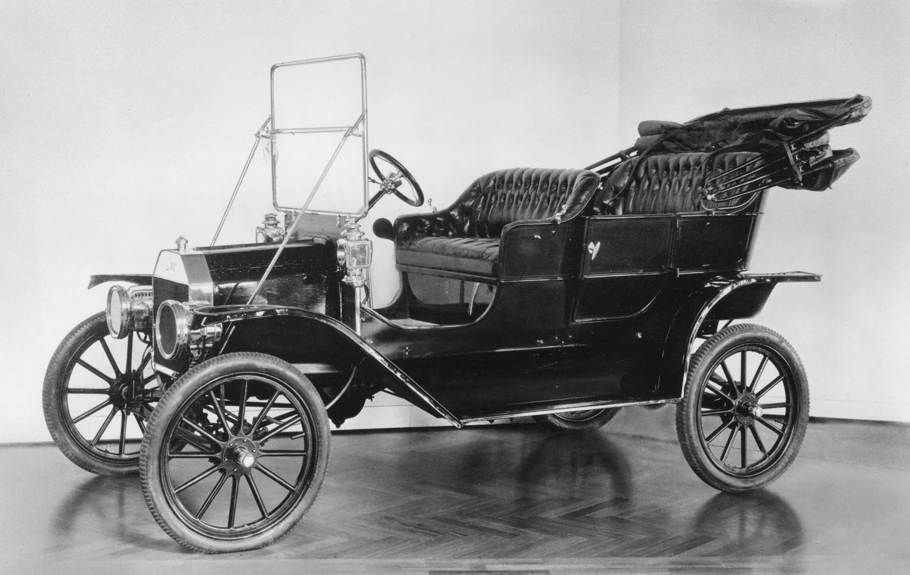
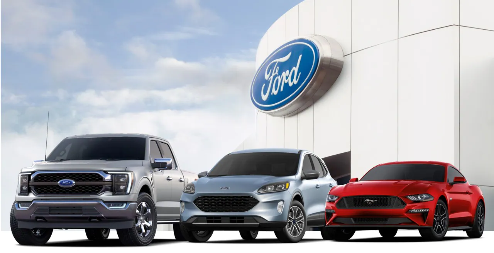

History

Ford Motor Company, established in 1903 by Henry Ford, stands as a pioneering force in the automotive industry. Throughout its illustrious history, Ford has made remarkable contributions that have transformed the way people perceive transportation. With the introduction of the Model T, the company revolutionized assembly line production, making cars more affordable and accessible to the general public. Ford's resilience was evident as it weathered economic challenges, emerging as a symbol of American ingenuity and tenacity. Over the years, Ford has unveiled iconic models like the Mustang and F-150, solidifying its reputation for innovation and high-performance vehicles. The company's legacy spans over a century, characterized by a steadfast commitment to quality, innovation, and a relentless pursuit of excellence.
Since its inception in 1903, Ford Motor Company has etched a rich and storied history in the automotive realm. Founded by Henry Ford, the company made an indelible impact by introducing the groundbreaking Model T, which redefined car manufacturing with its assembly line production. This landmark innovation made automobiles accessible to a wider audience and revolutionized the transportation landscape. Ford's journey has been marked by overcoming economic adversities, serving as a testament to American resourcefulness and resilience. Notably, Ford's lineup of legendary models, including the iconic Mustang and versatile F-150, has earned global acclaim for their innovation and performance. Driven by a legacy spanning more than a century, Ford remains firmly committed to driving the future of transportation, empowering people to traverse the world on four wheels with unparalleled experiences.
Vision
Ford's vision is anchored in becoming more than just an automotive brand; it aims to be a beloved and trusted name, admired for its unwavering commitment to innovation, sustainability, and social responsibility. With an eye on the future, Ford envisions a world where mobility is seamless, efficient, and accessible to all, powered by cutting-edge technologies that redefine transportation. Driven by a passion for creating extraordinary vehicles, the company seeks to lead the industry in ushering in a new era of mobility. As a forward-thinking organization, Ford actively anticipates and meets the evolving needs of its customers, setting the standard for the future of transportation and making a positive impact on society.
At the core of Ford's vision is a deep dedication to fostering a diverse and inclusive culture. The company believes in creating an environment where every individual is valued and respected, contributing to a stronger and more innovative organization. Ford aspires to be a force for good in the world, making a meaningful difference in people's lives and enriching communities through its products and services. With an unwavering commitment to environmental sustainability, Ford seeks to lead the way in reducing its carbon footprint and creating a greener future. Guided by its bold vision, Ford is poised to transcend the boundaries of traditional automotive companies, transforming the way people move and experience the world while remaining rooted in its commitment to excellence and social responsibility.
Customer Service
At Ford, customer focus is not just a buzzword; it is the beating heart of our entire business ethos. From the very beginning, we have made it our mission to deeply understand and prioritize the needs of our customers. Every decision we make, every product we design, and every service we offer is geared towards providing personalized experiences that go above and beyond expectations. Our customer-centric approach is driven by a genuine desire to build lasting relationships with our valued clients. By actively listening to customer feedback and staying attuned to market trends, we are able to anticipate and meet the evolving needs of our diverse customer base. Through continuous improvement and innovation, we strive to create a positive and seamless journey for every individual who interacts with the Ford brand.
At Ford, customer service is at the core of our values. We prioritize the needs of our customers, aiming to provide personalized experiences that exceed expectations. Our commitment to exceptional customer care spans from pre-purchase support to post-purchase services, ensuring a seamless journey for every individual. By actively listening to customer feedback and continuously improving our offerings, we strive to build lasting relationships with our valued patrons. With a dedicated team of experts and a comprehensive range of automotive services, we are dedicated to delivering the best possible ownership experience to our customers worldwide.
Products

At Ford, we take immense pride in our diverse portfolio of products, which showcases our unwavering commitment to innovation, quality, and customer satisfaction. Our range of automobiles stands as a testament to the pursuit of excellence, combining unparalleled performance, striking aesthetics, and cutting-edge technology. Whether it's the iconic Ford Mustang, synonymous with raw power and classic American style, or the versatile Ford F-150, a symbol of durability and capability, our vehicles cater to a wide spectrum of lifestyles and preferences. Beyond personal transportation, our commercial vehicles offer reliability and efficiency, powering businesses and industries to new heights. We understand that different customers have unique needs, and that's why our product lineup is carefully crafted to accommodate diverse requirements, providing choices that resonate with individuals and businesses alike.
At Ford, our commitment to excellence and innovation drives everything we do. With a rich history dating back to 1903, we have been pioneers in the automotive industry, revolutionizing assembly line production with the iconic Model T. Today, our diverse range of products, from powerful and stylish automobiles to commercial vehicles, reflects our dedication to meeting the evolving needs of our customers worldwide.We take pride in providing exceptional customer service, tailoring experiences to exceed expectations. Our goal is to create lasting relationships with our valued customers, offering personalized support, maintenance services, and financing options. With a focus on sustainability, we strive to shape the future of transportation by incorporating cutting-edge technologies and fostering a culture of innovation